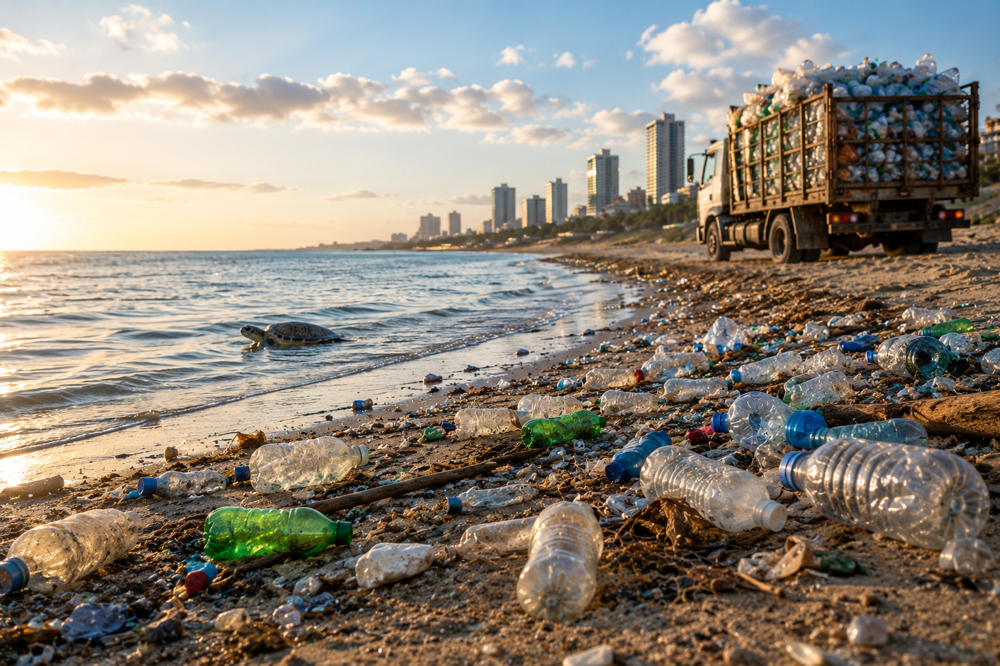

משימת שיא 2
פחות הצלחנו בפעם הראשונה,
בואו ננסה שוב.
הפעם יש 3 סעיפים. עליכם להצליח בכולם.

הידעת?
עד אמצע המאה ה-20 משקאות רבים נמכרו בבקבוקי זכוכית. בהמשך עברו חברות רבות להשתמש בבקבוקי פלסטיק.
עם זאת, השימוש הרחב בפלסטיק יוצר אתגר סביבתי משמעותי: חלק גדול מאריזות הפלסטיק מיוצר לשימוש קצר, אך נשאר בסביבה זמן רב לאחר ההשלכה. כאשר הפלסטיק אינו נאסף או ממוחזר כראוי, הוא עלול להצטבר בשטחים פתוחים, בנחלים ובים, ולפגוע במערכות אקולוגיות ובבעלי חיים.
חלק א
לפניכם טבלה המציגה נתונים עבור בקבוק המכיל ליטר משקה.
השלימו את הטבלה - גררו את המילים ממחסן המילים למקומות המתאימים:
| סוג אריזה |
מסת ה-
(גרם)
|
מסת ה-
(גרם)
|
מסת ה-
(גרם)
|
|---|---|---|---|
| בקבוק זכוכית | 1500 | 500 | 1000 |
| בקבוק פלסטיק | 1025 | 25 | 1000 |
חלק ב
השלימו את המשפטים בעזרת מחסן המילים:
האם פלסטיק הוא הצלחה או כישלון?
חברת משקאות שבדקה הובלה של מיליון בקבוקי משקה מצאה את הנתונים הבאים:
| נתון | בקבוקי זכוכית | בקבוקי פלסטיק |
|---|---|---|
| מסה כוללת לשינוע (ברוטו) | 1500 טון | 1025 טון |
| פליטות פחמן דו-חמצניחומר במצב צבירה של גז כתוצאה מהשינוע | 100% | 68% |
מאיה ואדם שוחחו על הנתונים שעלו מהטבלה.
קראו את השיחה ביניהם וענו על השאלה לאחר מכן.
| נתון | בקבוקי זכוכית | בקבוקי פלסטיק |
|---|---|---|
| מסה כוללת לשינוע (ברוטו) | 1500 טון | 1025 טון |
| פליטות פחמן דו-חמצניחומר במצב צבירה של גז כתוצאה מהשינוע | 100% | 68% |
מאיה
הפלסטיק הוא הצלחה, משום שהוא מאפשר להוביל את אותה כמות משקה תוך שימוש בפחות דלק.
אדם
הפלסטיק הוא כישלון, משום שהוא יוצר בעיות סביבתיות.
חלק ג
בהתבסס על הנתונים שהוצגו בטבלה, איזה טיעון משקף בצורה הטובה ביותר את הממצאים?